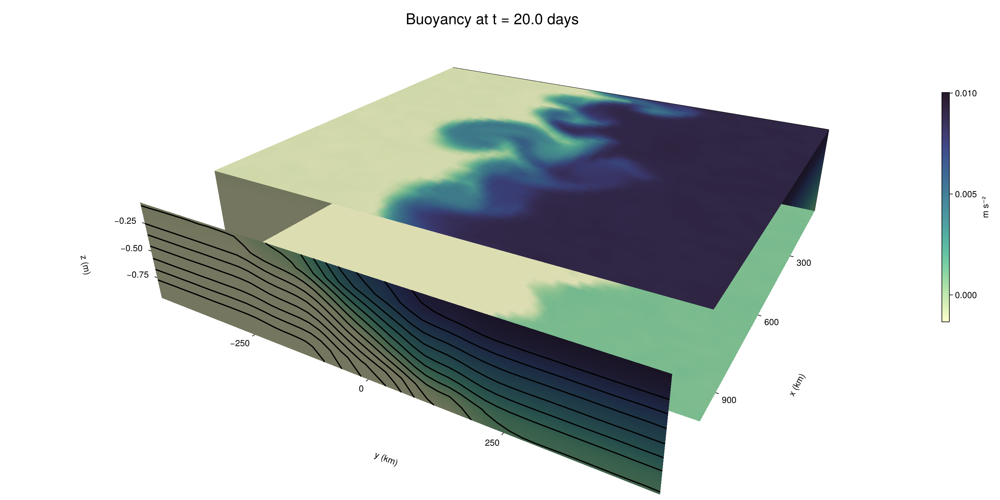

Baroclinic adjustment
In this example, we simulate the evolution and equilibration of a baroclinically unstable front.
Install dependencies
First let's make sure we have all required packages installed.
using Pkg
pkg"add Oceananigans, CairoMakie"using Oceananigans
using Oceananigans.UnitsGrid
We use a three-dimensional channel that is periodic in the x direction:
Lx = 1000kilometers # east-west extent [m]
Ly = 1000kilometers # north-south extent [m]
Lz = 1kilometers # depth [m]
grid = RectilinearGrid(size = (48, 48, 8),
x = (0, Lx),
y = (-Ly/2, Ly/2),
z = (-Lz, 0),
topology = (Periodic, Bounded, Bounded))48×48×8 RectilinearGrid{Float64, Periodic, Bounded, Bounded} on CPU with 3×3×3 halo
├── Periodic x ∈ [0.0, 1.0e6) regularly spaced with Δx=20833.3
├── Bounded y ∈ [-500000.0, 500000.0] regularly spaced with Δy=20833.3
└── Bounded z ∈ [-1000.0, 0.0] regularly spaced with Δz=125.0Model
We built a HydrostaticFreeSurfaceModel with an ImplicitFreeSurface solver. Regarding Coriolis, we use a beta-plane centered at 45° South.
model = HydrostaticFreeSurfaceModel(; grid,
coriolis = BetaPlane(latitude = -45),
buoyancy = BuoyancyTracer(),
tracers = :b,
momentum_advection = WENO(),
tracer_advection = WENO())HydrostaticFreeSurfaceModel{CPU, RectilinearGrid}(time = 0 seconds, iteration = 0)
├── grid: 48×48×8 RectilinearGrid{Float64, Periodic, Bounded, Bounded} on CPU with 3×3×3 halo
├── timestepper: QuasiAdamsBashforth2TimeStepper
├── tracers: b
├── closure: Nothing
├── buoyancy: BuoyancyTracer with ĝ = NegativeZDirection()
├── free surface: ImplicitFreeSurface with gravitational acceleration 9.80665 m s⁻²
│ └── solver: FFTImplicitFreeSurfaceSolver
├── advection scheme:
│ ├── momentum: WENO reconstruction order 5
│ └── b: WENO reconstruction order 5
└── coriolis: BetaPlane{Float64}We start our simulation from rest with a baroclinically unstable buoyancy distribution. We use ramp(y, Δy), defined below, to specify a front with width Δy and horizontal buoyancy gradient M². We impose the front on top of a vertical buoyancy gradient N² and a bit of noise.
"""
ramp(y, Δy)
Linear ramp from 0 to 1 between -Δy/2 and +Δy/2.
For example:
```
y < -Δy/2 => ramp = 0
-Δy/2 < y < -Δy/2 => ramp = y / Δy
y > Δy/2 => ramp = 1
```
"""
ramp(y, Δy) = min(max(0, y/Δy + 1/2), 1)
N² = 1e-5 # [s⁻²] buoyancy frequency / stratification
M² = 1e-7 # [s⁻²] horizontal buoyancy gradient
Δy = 100kilometers # width of the region of the front
Δb = Δy * M² # buoyancy jump associated with the front
ϵb = 1e-2 * Δb # noise amplitude
bᵢ(x, y, z) = N² * z + Δb * ramp(y, Δy) + ϵb * randn()
set!(model, b=bᵢ)Let's visualize the initial buoyancy distribution.
using CairoMakie
# Build coordinates with units of kilometers
x, y, z = 1e-3 .* nodes(grid, (Center(), Center(), Center()))
b = model.tracers.b
fig, ax, hm = heatmap(y, z, interior(b)[1, :, :],
colormap=:deep,
axis = (xlabel = "y [km]",
ylabel = "z [km]",
title = "b(x=0, y, z, t=0)",
titlesize = 24))
Colorbar(fig[1, 2], hm, label = "[m s⁻²]")
fig
Simulation
Now let's build a Simulation.
simulation = Simulation(model, Δt=20minutes, stop_time=20days)Simulation of HydrostaticFreeSurfaceModel{CPU, RectilinearGrid}(time = 0 seconds, iteration = 0)
├── Next time step: 20 minutes
├── Elapsed wall time: 0 seconds
├── Wall time per iteration: NaN days
├── Stop time: 20 days
├── Stop iteration : Inf
├── Wall time limit: Inf
├── Callbacks: OrderedDict with 4 entries:
│ ├── stop_time_exceeded => Callback of stop_time_exceeded on IterationInterval(1)
│ ├── stop_iteration_exceeded => Callback of stop_iteration_exceeded on IterationInterval(1)
│ ├── wall_time_limit_exceeded => Callback of wall_time_limit_exceeded on IterationInterval(1)
│ └── nan_checker => Callback of NaNChecker for u on IterationInterval(100)
├── Output writers: OrderedDict with no entries
└── Diagnostics: OrderedDict with no entriesWe add a TimeStepWizard callback to adapt the simulation's time-step,
conjure_time_step_wizard!(simulation, IterationInterval(20), cfl=0.2, max_Δt=20minutes)Also, we add a callback to print a message about how the simulation is going,
using Printf
wall_clock = Ref(time_ns())
function print_progress(sim)
u, v, w = model.velocities
progress = 100 * (time(sim) / sim.stop_time)
elapsed = (time_ns() - wall_clock[]) / 1e9
@printf("[%05.2f%%] i: %d, t: %s, wall time: %s, max(u): (%6.3e, %6.3e, %6.3e) m/s, next Δt: %s\n",
progress, iteration(sim), prettytime(sim), prettytime(elapsed),
maximum(abs, u), maximum(abs, v), maximum(abs, w), prettytime(sim.Δt))
wall_clock[] = time_ns()
return nothing
end
add_callback!(simulation, print_progress, IterationInterval(100))Diagnostics/Output
Here, we save the buoyancy, $b$, at the edges of our domain as well as the zonal ($x$) average of buoyancy.
u, v, w = model.velocities
ζ = ∂x(v) - ∂y(u)
B = Average(b, dims=1)
U = Average(u, dims=1)
V = Average(v, dims=1)
filename = "baroclinic_adjustment"
save_fields_interval = 0.5day
slicers = (east = (grid.Nx, :, :),
north = (:, grid.Ny, :),
bottom = (:, :, 1),
top = (:, :, grid.Nz))
for side in keys(slicers)
indices = slicers[side]
simulation.output_writers[side] = JLD2OutputWriter(model, (; b, ζ);
filename = filename * "_$(side)_slice",
schedule = TimeInterval(save_fields_interval),
overwrite_existing = true,
indices)
end
simulation.output_writers[:zonal] = JLD2OutputWriter(model, (; b=B, u=U, v=V);
filename = filename * "_zonal_average",
schedule = TimeInterval(save_fields_interval),
overwrite_existing = true)JLD2OutputWriter scheduled on TimeInterval(12 hours):
├── filepath: ./baroclinic_adjustment_zonal_average.jld2
├── 3 outputs: (b, u, v)
├── array type: Array{Float64}
├── including: [:grid, :coriolis, :buoyancy, :closure]
├── file_splitting: NoFileSplitting
└── file size: 30.2 KiBNow we're ready to run.
@info "Running the simulation..."
run!(simulation)
@info "Simulation completed in " * prettytime(simulation.run_wall_time)[ Info: Running the simulation...
[ Info: Initializing simulation...
[00.00%] i: 0, t: 0 seconds, wall time: 16.028 seconds, max(u): (0.000e+00, 0.000e+00, 0.000e+00) m/s, next Δt: 20 minutes
[ Info: ... simulation initialization complete (16.377 seconds)
[ Info: Executing initial time step...
[ Info: ... initial time step complete (27.335 seconds).
[06.94%] i: 100, t: 1.389 days, wall time: 44.676 seconds, max(u): (1.260e-01, 1.204e-01, 1.596e-03) m/s, next Δt: 20 minutes
[13.89%] i: 200, t: 2.778 days, wall time: 2.640 seconds, max(u): (2.198e-01, 1.925e-01, 1.707e-03) m/s, next Δt: 20 minutes
[20.83%] i: 300, t: 4.167 days, wall time: 2.552 seconds, max(u): (2.870e-01, 2.469e-01, 1.853e-03) m/s, next Δt: 20 minutes
[27.78%] i: 400, t: 5.556 days, wall time: 2.713 seconds, max(u): (3.570e-01, 3.216e-01, 1.745e-03) m/s, next Δt: 20 minutes
[34.72%] i: 500, t: 6.944 days, wall time: 2.584 seconds, max(u): (4.374e-01, 4.275e-01, 1.937e-03) m/s, next Δt: 20 minutes
[41.67%] i: 600, t: 8.333 days, wall time: 2.680 seconds, max(u): (5.546e-01, 7.198e-01, 2.531e-03) m/s, next Δt: 20 minutes
[48.61%] i: 700, t: 9.722 days, wall time: 2.566 seconds, max(u): (6.931e-01, 1.183e+00, 4.136e-03) m/s, next Δt: 20 minutes
[55.56%] i: 800, t: 11.111 days, wall time: 2.755 seconds, max(u): (1.060e+00, 1.246e+00, 4.605e-03) m/s, next Δt: 20 minutes
[62.50%] i: 900, t: 12.500 days, wall time: 3.028 seconds, max(u): (1.364e+00, 1.249e+00, 4.276e-03) m/s, next Δt: 20 minutes
[69.44%] i: 1000, t: 13.889 days, wall time: 2.575 seconds, max(u): (1.367e+00, 1.239e+00, 5.044e-03) m/s, next Δt: 20 minutes
[76.39%] i: 1100, t: 15.278 days, wall time: 2.505 seconds, max(u): (1.294e+00, 1.126e+00, 3.103e-03) m/s, next Δt: 20 minutes
[83.33%] i: 1200, t: 16.667 days, wall time: 2.811 seconds, max(u): (1.228e+00, 1.046e+00, 4.392e-03) m/s, next Δt: 20 minutes
[90.28%] i: 1300, t: 18.056 days, wall time: 2.719 seconds, max(u): (1.227e+00, 1.276e+00, 5.214e-03) m/s, next Δt: 20 minutes
[97.22%] i: 1400, t: 19.444 days, wall time: 2.664 seconds, max(u): (1.190e+00, 1.198e+00, 6.180e-03) m/s, next Δt: 20 minutes
[ Info: Simulation is stopping after running for 1.426 minutes.
[ Info: Simulation time 20 days equals or exceeds stop time 20 days.
[ Info: Simulation completed in 1.427 minutes
Visualization
All that's left is to make a pretty movie. Actually, we make two visualizations here. First, we illustrate how to make a 3D visualization with Makie's Axis3 and Makie.surface. Then we make a movie in 2D. We use CairoMakie in this example, but note that using GLMakie is more convenient on a system with OpenGL, as figures will be displayed on the screen.
using CairoMakieThree-dimensional visualization
We load the saved buoyancy output on the top, bottom, north, and east surface as FieldTimeSerieses.
filename = "baroclinic_adjustment"
sides = keys(slicers)
slice_filenames = NamedTuple(side => filename * "_$(side)_slice.jld2" for side in sides)
b_timeserieses = (east = FieldTimeSeries(slice_filenames.east, "b"),
north = FieldTimeSeries(slice_filenames.north, "b"),
bottom = FieldTimeSeries(slice_filenames.bottom, "b"),
top = FieldTimeSeries(slice_filenames.top, "b"))
B_timeseries = FieldTimeSeries(filename * "_zonal_average.jld2", "b")
times = B_timeseries.times
grid = B_timeseries.grid48×48×8 RectilinearGrid{Float64, Periodic, Bounded, Bounded} on CPU with 3×3×3 halo
├── Periodic x ∈ [0.0, 1.0e6) regularly spaced with Δx=20833.3
├── Bounded y ∈ [-500000.0, 500000.0] regularly spaced with Δy=20833.3
└── Bounded z ∈ [-1000.0, 0.0] regularly spaced with Δz=125.0We build the coordinates. We rescale horizontal coordinates to kilometers.
xb, yb, zb = nodes(b_timeserieses.east)
xb = xb ./ 1e3 # convert m -> km
yb = yb ./ 1e3 # convert m -> km
Nx, Ny, Nz = size(grid)
x_xz = repeat(x, 1, Nz)
y_xz_north = y[end] * ones(Nx, Nz)
z_xz = repeat(reshape(z, 1, Nz), Nx, 1)
x_yz_east = x[end] * ones(Ny, Nz)
y_yz = repeat(y, 1, Nz)
z_yz = repeat(reshape(z, 1, Nz), grid.Ny, 1)
x_xy = x
y_xy = y
z_xy_top = z[end] * ones(grid.Nx, grid.Ny)
z_xy_bottom = z[1] * ones(grid.Nx, grid.Ny)Then we create a 3D axis. We use zonal_slice_displacement to control where the plot of the instantaneous zonal average flow is located.
fig = Figure(size = (1600, 800))
zonal_slice_displacement = 1.2
ax = Axis3(fig[2, 1],
aspect=(1, 1, 1/5),
xlabel = "x (km)",
ylabel = "y (km)",
zlabel = "z (m)",
xlabeloffset = 100,
ylabeloffset = 100,
zlabeloffset = 100,
limits = ((x[1], zonal_slice_displacement * x[end]), (y[1], y[end]), (z[1], z[end])),
elevation = 0.45,
azimuth = 6.8,
xspinesvisible = false,
zgridvisible = false,
protrusions = 40,
perspectiveness = 0.7)Axis3()We use data from the final savepoint for the 3D plot. Note that this plot can easily be animated by using Makie's Observable. To dive into Observables, check out Makie.jl's Documentation.
n = length(times)41Now let's make a 3D plot of the buoyancy and in front of it we'll use the zonally-averaged output to plot the instantaneous zonal-average of the buoyancy.
b_slices = (east = interior(b_timeserieses.east[n], 1, :, :),
north = interior(b_timeserieses.north[n], :, 1, :),
bottom = interior(b_timeserieses.bottom[n], :, :, 1),
top = interior(b_timeserieses.top[n], :, :, 1))
# Zonally-averaged buoyancy
B = interior(B_timeseries[n], 1, :, :)
clims = 1.1 .* extrema(b_timeserieses.top[n][:])
kwargs = (colorrange=clims, colormap=:deep)
surface!(ax, x_yz_east, y_yz, z_yz; color = b_slices.east, kwargs...)
surface!(ax, x_xz, y_xz_north, z_xz; color = b_slices.north, kwargs...)
surface!(ax, x_xy, y_xy, z_xy_bottom ; color = b_slices.bottom, kwargs...)
surface!(ax, x_xy, y_xy, z_xy_top; color = b_slices.top, kwargs...)
sf = surface!(ax, zonal_slice_displacement .* x_yz_east, y_yz, z_yz; color = B, kwargs...)
contour!(ax, y, z, B; transformation = (:yz, zonal_slice_displacement * x[end]),
levels = 15, linewidth = 2, color = :black)
Colorbar(fig[2, 2], sf, label = "m s⁻²", height = Relative(0.4), tellheight=false)
title = "Buoyancy at t = " * string(round(times[n] / day, digits=1)) * " days"
fig[1, 1:2] = Label(fig, title; fontsize = 24, tellwidth = false, padding = (0, 0, -120, 0))
rowgap!(fig.layout, 1, Relative(-0.2))
colgap!(fig.layout, 1, Relative(-0.1))
save("baroclinic_adjustment_3d.png", fig)
Two-dimensional movie
We make a 2D movie that shows buoyancy $b$ and vertical vorticity $ζ$ at the surface, as well as the zonally-averaged zonal and meridional velocities $U$ and $V$ in the $(y, z)$ plane. First we load the FieldTimeSeries and extract the additional coordinates we'll need for plotting
ζ_timeseries = FieldTimeSeries(slice_filenames.top, "ζ")
U_timeseries = FieldTimeSeries(filename * "_zonal_average.jld2", "u")
B_timeseries = FieldTimeSeries(filename * "_zonal_average.jld2", "b")
V_timeseries = FieldTimeSeries(filename * "_zonal_average.jld2", "v")
xζ, yζ, zζ = nodes(ζ_timeseries)
yv = ynodes(V_timeseries)
xζ = xζ ./ 1e3 # convert m -> km
yζ = yζ ./ 1e3 # convert m -> km
yv = yv ./ 1e3 # convert m -> km49-element Vector{Float64}:
-500.0
-479.1666666666667
-458.3333333333333
-437.5
-416.6666666666667
-395.8333333333333
-375.0
-354.1666666666667
-333.3333333333333
-312.5
-291.6666666666667
-270.8333333333333
-250.0
-229.16666666666666
-208.33333333333334
-187.5
-166.66666666666666
-145.83333333333334
-125.0
-104.16666666666667
-83.33333333333333
-62.5
-41.666666666666664
-20.833333333333332
0.0
20.833333333333332
41.666666666666664
62.5
83.33333333333333
104.16666666666667
125.0
145.83333333333334
166.66666666666666
187.5
208.33333333333334
229.16666666666666
250.0
270.8333333333333
291.6666666666667
312.5
333.3333333333333
354.1666666666667
375.0
395.8333333333333
416.6666666666667
437.5
458.3333333333333
479.1666666666667
500.0Next, we set up a plot with 4 panels. The top panels are large and square, while the bottom panels get a reduced aspect ratio through rowsize!.
set_theme!(Theme(fontsize=24))
fig = Figure(size=(1800, 1000))
axb = Axis(fig[1, 2], xlabel="x (km)", ylabel="y (km)", aspect=1)
axζ = Axis(fig[1, 3], xlabel="x (km)", ylabel="y (km)", aspect=1, yaxisposition=:right)
axu = Axis(fig[2, 2], xlabel="y (km)", ylabel="z (m)")
axv = Axis(fig[2, 3], xlabel="y (km)", ylabel="z (m)", yaxisposition=:right)
rowsize!(fig.layout, 2, Relative(0.3))To prepare a plot for animation, we index the timeseries with an Observable,
n = Observable(1)
b_top = @lift interior(b_timeserieses.top[$n], :, :, 1)
ζ_top = @lift interior(ζ_timeseries[$n], :, :, 1)
U = @lift interior(U_timeseries[$n], 1, :, :)
V = @lift interior(V_timeseries[$n], 1, :, :)
B = @lift interior(B_timeseries[$n], 1, :, :)Observable([-0.009370997078667186 -0.008125617192429357 -0.0068763438982099205 -0.005622130599508074 -0.0043806085701541195 -0.0031142698555651958 -0.001866803788439029 -0.0006265505201280877; -0.009374459842878038 -0.008119379546778254 -0.006863826831314583 -0.005629036518199227 -0.004388208618421337 -0.0031187965142401926 -0.001883492185297816 -0.0006234488285689273; -0.009388142720147348 -0.00813715026811211 -0.0068915859836990055 -0.005630884276681851 -0.004378066476206247 -0.003128820111752906 -0.0018698171380251074 -0.0006047696284878156; -0.00934988417471097 -0.008123464204593192 -0.006856688787106974 -0.005596091574044237 -0.004357653635348226 -0.003146419535485326 -0.0018777067965619284 -0.0006505592217069899; -0.009377515197946842 -0.008142346412240029 -0.006866092642788664 -0.00565631773106982 -0.004378152261497459 -0.003131244999823581 -0.0018795345095450778 -0.0006205561175065243; -0.00937031259874164 -0.008148406292313731 -0.0068631242851619504 -0.005605993704324737 -0.004358882072114223 -0.0031314365407085543 -0.0018751461718923782 -0.0006407261355620874; -0.009374446038813183 -0.008147031282258814 -0.0068549708439804916 -0.005600289843299316 -0.004390393246789369 -0.003135910049815486 -0.0018654461273148034 -0.0006511171991121551; -0.009383793090152364 -0.008113599407261819 -0.0068576301889041 -0.005660834905579078 -0.004398541872191474 -0.003132108166680862 -0.0018781918229355584 -0.0006130565250648427; -0.009364088772021271 -0.008135618061541712 -0.006859039455513727 -0.005630223739101592 -0.004379751702227506 -0.0031291072375920124 -0.001867735325073904 -0.0006306308083584718; -0.0093803424251352 -0.008149317786057474 -0.00688410427054392 -0.005619342214723801 -0.004371081495782178 -0.003111386636260918 -0.0018951881482389052 -0.0006195153750388687; -0.009371196595114378 -0.00809898399429551 -0.006888115949397643 -0.0056425274299645445 -0.004363764139514897 -0.0031066641575981705 -0.0018431212164258942 -0.0006052883833574794; -0.00937340835798812 -0.008103851156787875 -0.006869263673677492 -0.005637261014178518 -0.0043642258120875875 -0.003144912493978838 -0.0018939663204876323 -0.00062476290585013; -0.009372092442372892 -0.008108276812964499 -0.006877451688632036 -0.005630703145275851 -0.0043877431029798524 -0.0031121567122135026 -0.0018923441693215358 -0.0006184757418281713; -0.009370674563068405 -0.00813949948960017 -0.006882551839281866 -0.005633972458369517 -0.004347906713157984 -0.003158921801591762 -0.0018701959272395617 -0.0006221444065729825; -0.009396836376184457 -0.008112120873297367 -0.006872784044323214 -0.005629332194707619 -0.004388426783514095 -0.0031465009575161475 -0.0018705053163369765 -0.0006268781523311055; -0.009367929411017627 -0.008114512077762091 -0.006885637967074913 -0.005621413545046891 -0.004370711731001794 -0.0031226610871572156 -0.001843679496318095 -0.0006118493285129815; -0.009400002624701394 -0.008117090018391901 -0.0068736404498424865 -0.005620162808949202 -0.0043899600218654826 -0.0031057209058070515 -0.0018779347754710092 -0.0005975297499561462; -0.009377385187525051 -0.008124649949653737 -0.006901734534451751 -0.005600645475754537 -0.0043655383962790464 -0.003138190942641032 -0.0018718480278198948 -0.0006085294712605515; -0.00935932760440508 -0.008124910420996454 -0.006891480680332005 -0.005635433458811032 -0.0043793368468534695 -0.0031017866517969706 -0.0019006310655921442 -0.0006274086304920422; -0.009347889737970787 -0.008125486766669092 -0.006891914972315442 -0.0056205276100543084 -0.004369767310442836 -0.003121499623647411 -0.0018712410777919379 -0.0006178883978058254; -0.009393180286569542 -0.008146575947155591 -0.006870379601896344 -0.005621968325917495 -0.004370766584947777 -0.003132726231853482 -0.0018916109155877898 -0.0006258835258310366; -0.009384223612063 -0.008136564902675067 -0.006872884061592129 -0.005630023644576922 -0.0043753956571651225 -0.0031426453511736777 -0.0018280743652060623 -0.0006427340363982203; -0.007481278742070423 -0.0062359999054809635 -0.005012984602723143 -0.0037707005903111056 -0.002511577368160979 -0.0012536123196731765 -8.007192404845001e-6 0.0012429282242525405; -0.005422959963805357 -0.004142313312252757 -0.0029149132441699233 -0.0016842675160733984 -0.00042028443717336054 0.0008467838904973494 0.002079408298493531 0.003338645144915926; -0.003344430239456988 -0.0020721151676804336 -0.0008365805823208755 0.00042231464080042815 0.0016326296780366327 0.0029266977579328612 0.004159737465412087 0.00542291171339352; -0.0012606320560625787 -2.067323733782323e-5 0.0012687575861447494 0.0025092062703650306 0.0037544257931351327 0.005001057127881374 0.006237269559015535 0.007512021223509639; 0.0006456194359796013 0.0018793430102432493 0.003118850721095689 0.004355057219773296 0.005610549473703571 0.006882697465024702 0.008135563550737376 0.009361064718411725; 0.0006331932787136392 0.0018788240095955963 0.003107834253252698 0.004383389172579674 0.00562339525338134 0.006904560987488965 0.008113759401668792 0.009370626203299886; 0.000625041839480062 0.001882158996178679 0.0031264620658173407 0.0043868120376391794 0.005647968994989558 0.006872692685413917 0.008132975613622972 0.009361310708055189; 0.0006212413339444957 0.0018741581016706518 0.0031261826838923424 0.004343346995307079 0.005629419284225247 0.006877246787580355 0.008122773770069112 0.00936695077591922; 0.0006359432833335172 0.0018847333751771816 0.0031415441275066923 0.00438466720113239 0.005622804544511873 0.006881489921075974 0.00813281700394882 0.009357907421215379; 0.000631416938880224 0.0018747142596137977 0.003119668340463446 0.004374394753557426 0.00562460852213442 0.00687185353713293 0.008123636463375718 0.009375471475650146; 0.0006272281475630002 0.001871709169999996 0.0031137082350984908 0.004376194837010357 0.005633184172887794 0.0068696307496589545 0.008124132568482196 0.009358546841944142; 0.0006166022042103449 0.0018948650257479885 0.0031659328728457815 0.004381771996563494 0.005622681838810743 0.006886951257514998 0.008111784368403773 0.009381197625983924; 0.0006235909141229606 0.0018683394162974012 0.0031069029760657095 0.0043538549978014 0.0056023791157422745 0.0068772577360201185 0.00811952648992371 0.00937809020302209; 0.0006259611846179999 0.0018930251718568918 0.0031136717074077805 0.004375469339502055 0.005624981078887227 0.006884676307887583 0.008132468861883792 0.009385224133659687; 0.0006210761069742053 0.001859394307734273 0.003103982658113952 0.004375354853362293 0.0056351444812458825 0.0068550201190775775 0.008111444902296457 0.009346090844299357; 0.0006315792269732996 0.0018845576069686243 0.0031023143611186624 0.004371624537865207 0.005616097011430697 0.006862909440649801 0.008112945821487293 0.009360394068221714; 0.0006414254556293691 0.0018831265108558918 0.0031219914168678317 0.00438866990610244 0.005631109309560737 0.0068777927921741455 0.008135918245414374 0.009347188300467027; 0.0006171344656529877 0.0018834037043779846 0.003134001484749419 0.004347187330723534 0.005613872979644551 0.006857491249061792 0.008107935545616486 0.009335420212103243; 0.0006172658703041831 0.0018839147876832793 0.0031138995554933595 0.0043676290263799785 0.00561907568307813 0.006870058047709457 0.008123145788648629 0.00939348854313653; 0.0006177418429579015 0.001865784015096468 0.003147444616782859 0.004349568340495207 0.005613934213192749 0.006879652066090323 0.008139832323863639 0.00935966954223809; 0.0006462378823281457 0.0018645289892485286 0.003126040106867249 0.004373499284175582 0.0056209871808030705 0.006878850516135726 0.008113779268790013 0.009386597059440407; 0.0006181951846094723 0.0018709110381186775 0.003118029510167255 0.004373311440409656 0.005625918909711429 0.0068932945854925385 0.008132989537017861 0.009361504675693126; 0.0006316475940697928 0.001846979785567307 0.0031210737477827878 0.004383204935761665 0.0056365540086973686 0.006874055802920089 0.00813890805997111 0.009363756985477248; 0.000633467726380359 0.0018812832959666838 0.0031156828340607365 0.004355874290482525 0.005618842325930011 0.00685729992522512 0.008120311000372367 0.009385933034158078; 0.000609480901389858 0.001860303240430168 0.0031234013481106523 0.004385385663170264 0.005619346703207655 0.006862680172723935 0.008141981384743669 0.009375811280605077; 0.0006354718376424258 0.0018800798016982152 0.0031330806224837224 0.004362729533143791 0.005667912311477448 0.006844988539745293 0.008113857381201984 0.009375108585346771])
and then build our plot:
hm = heatmap!(axb, xb, yb, b_top, colorrange=(0, Δb), colormap=:thermal)
Colorbar(fig[1, 1], hm, flipaxis=false, label="Surface b(x, y) (m s⁻²)")
hm = heatmap!(axζ, xζ, yζ, ζ_top, colorrange=(-5e-5, 5e-5), colormap=:balance)
Colorbar(fig[1, 4], hm, label="Surface ζ(x, y) (s⁻¹)")
hm = heatmap!(axu, yb, zb, U; colorrange=(-5e-1, 5e-1), colormap=:balance)
Colorbar(fig[2, 1], hm, flipaxis=false, label="Zonally-averaged U(y, z) (m s⁻¹)")
contour!(axu, yb, zb, B; levels=15, color=:black)
hm = heatmap!(axv, yv, zb, V; colorrange=(-1e-1, 1e-1), colormap=:balance)
Colorbar(fig[2, 4], hm, label="Zonally-averaged V(y, z) (m s⁻¹)")
contour!(axv, yb, zb, B; levels=15, color=:black)Finally, we're ready to record the movie.
frames = 1:length(times)
record(fig, filename * ".mp4", frames, framerate=8) do i
n[] = i
endThis page was generated using Literate.jl.